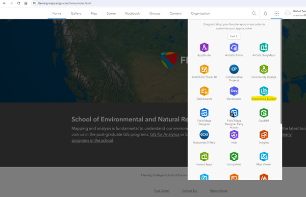
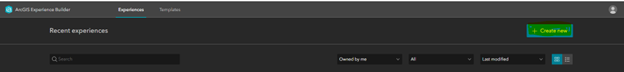
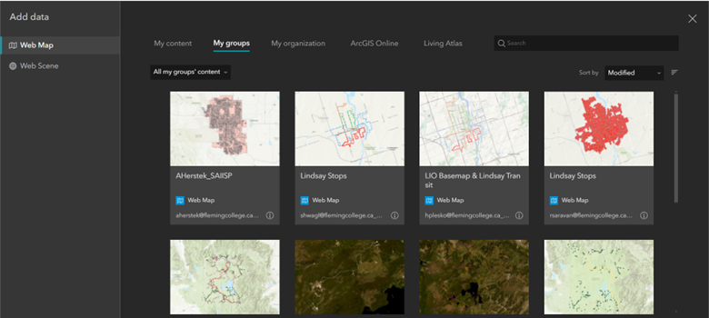
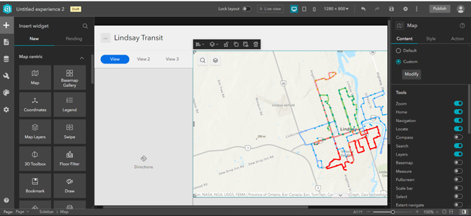

• Create a experience builder using the ArcGIS online component from the menu button Click the experience builder app.
• Create a new Experience builder using the create new button in the right side.
• There will be a whole lot of web page regarding to create a new one choose wisely for the application of your interest. In my case we are creating a Transit application for Lindsay, so this application should be Map centric.
• Add data from the select map tab in the right hand side after clicking on the map in the center screen, this enables users to add data from the either ArcGIS online or local database.
• After adding the data, the template showed the stops and routes of the Lindsay transit in the application. This routes features are what we creaetd from the GTFS data collected.
• First to know about the routing features we should know about the raw data we collected this acts as the data tier for us and the middle and web tier would be the ESRI Experience builder.
• General Transit Feed Specifications are the raw data for all the transits along the world, this is a common form of transit data which can be shared among the stake holders and it contains all the necessary data which we want to represent a routing feature.
| Advantages | Disadvantages |
|---|---|
| Many templates to choose from | Can be time consuming to create |
| Tied to AGOL organization account | Moving items around the page can be finicky |
| Can customize the theme/look | Cannot easily move the published experiences between accounts |
| No coding involved | |
| It will automatically update for different screen sizes | |
| Can integrate with other apps, like Dashboards and Surveys | |
| Can add triggers that activate depending on how the user interacts with the experience |